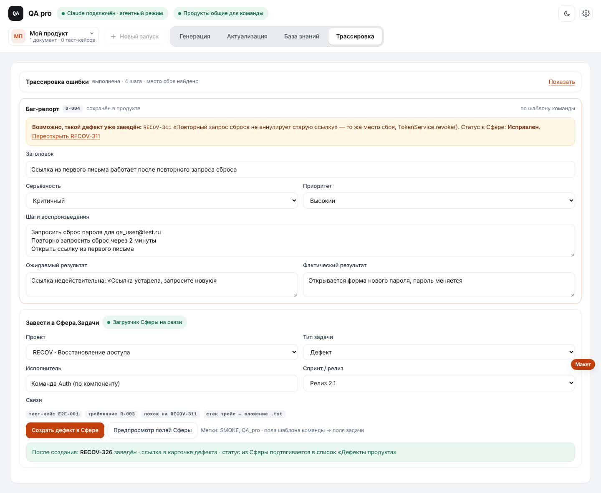
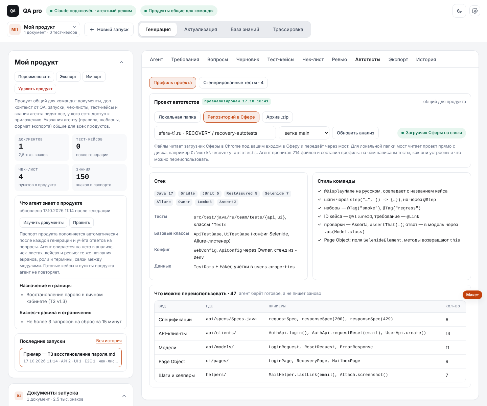
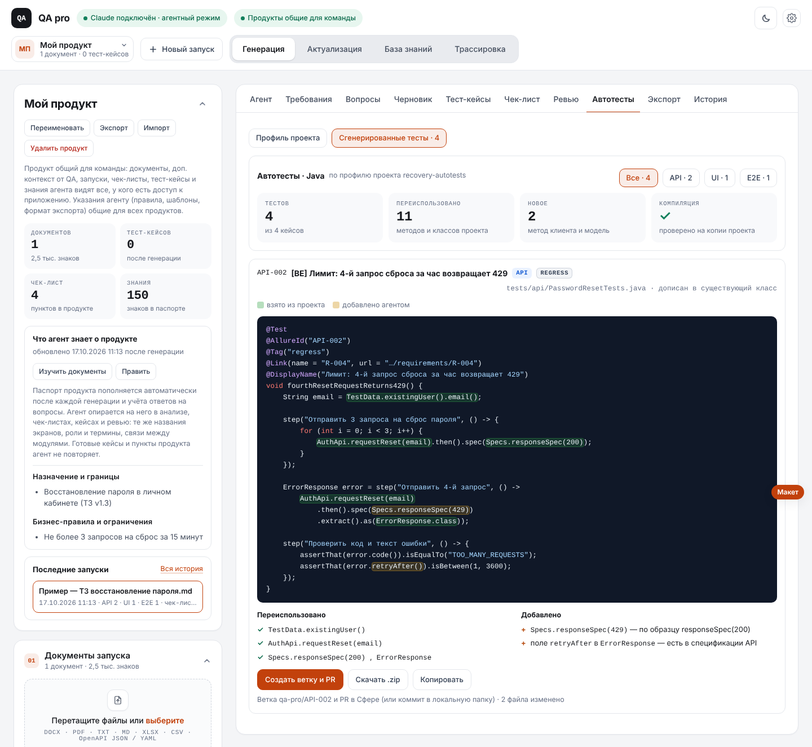
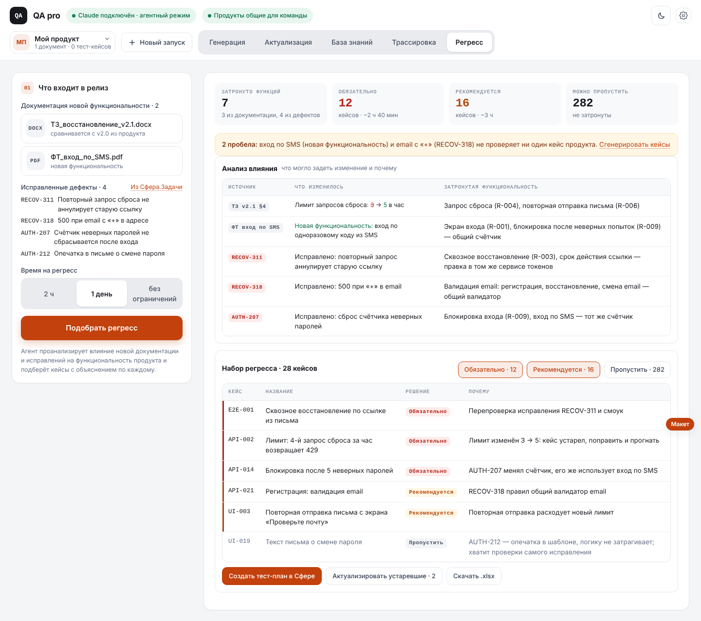
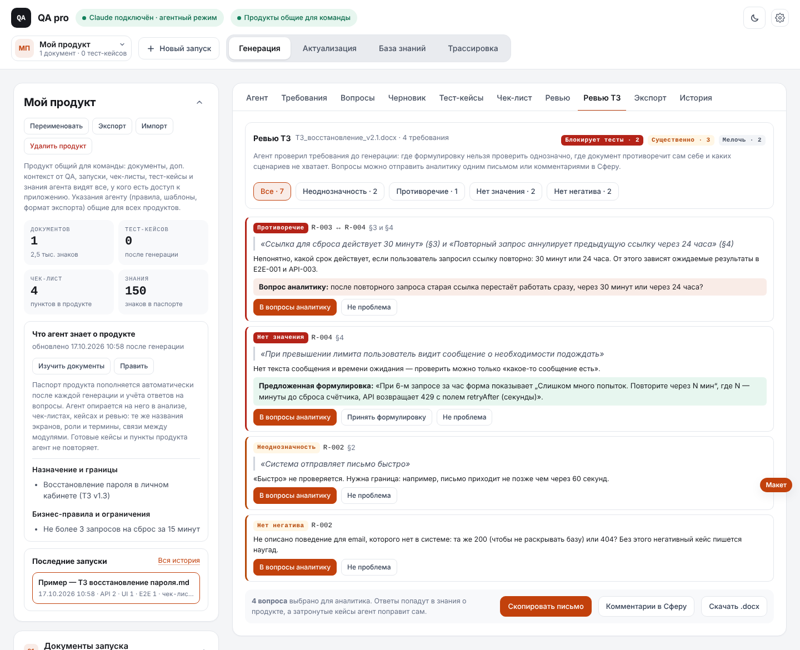
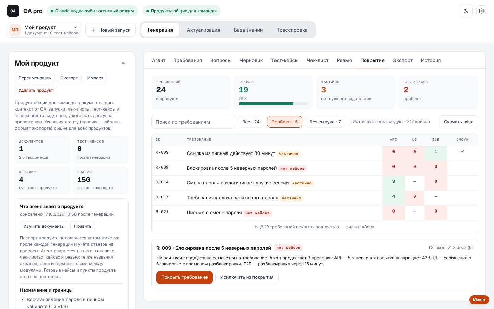

Пять доработок, которые снимают с тестировщика ручную работу до генерации кейсов и после неё. По каждой: зачем она, как работает, что увидит пользователь, что нужно для реализации и чем рискуем. Скрины — макеты на настоящем интерфейсе QA pro, данные в них примерные.
В ветке feature/defect-report агент оформляет баг-репорт по трассировке и шаблону команды, подбирает связанные кейсы, ищет дубли среди дефектов продукта. Дефект можно скопировать или скачать. Не хватает главного: завести его в трекер.

Загрузчик сейчас вызывает только API тестирования (/app/testing/api/v1). Первый шаг — записать запросы Сферы при ручном создании дефекта (HAR из DevTools) и по ним описать операции. Обязательные поля у проектов разные — их нужно читать из Сферы, а не зашивать.
Ручной кейс в автотест переписывают руками: те же шаги, тот же ожидаемый результат, но в коде. На это уходит больше времени, чем на сам кейс. Если генерировать код без знания проекта, получится тест, который придётся переписывать: другие клиенты, другие аннотации, дубли уже написанных методов.
Поэтому главное в этой доработке — анализ существующего проекта автотестов. Агент пишет тест так, как его написал бы человек из команды, и берёт готовое, а не пишет заново.


Большой проект не влезет в контекст целиком — нужен каталог сигнатур вместо исходников. Компиляция требует JDK на компьютере. API репозиториев Сферы, как и Сфера.Задачи, нужно сначала изучить по запросам самой Сферы. Сейчас проект для обкатки не выбран: функциональность закладывается под любой Java-проект.
Перед релизом QA-лид отбирает регресс руками: читает документацию новой функциональности и список исправленных дефектов, вспоминает, какие кейсы что проверяют, и выбирает на глаз. Прогнать всё — долго, выбрать мало — пропустить поломку. Особенно опасны исправления: правка в общем сервисе или валидаторе ломает соседнюю функциональность, о которой в задаче ни слова.

Косвенное влияние агент выводит из паспорта продукта: чем он подробнее (сервисы, общие компоненты), тем точнее выбор. По дефекту без места сбоя влияние — гипотеза, такие строки помечены. Решение «пропустить» опирается на ссылки кейсов на требования. Кейсы без ссылок (импорт из старой ТМС) агент сопоставит по тексту, но такой выбор помечается «проверьте». Пропущенные кейсы видны в списке — QA-лид может вернуть любой одним нажатием.
Ошибка в требовании, найденная до разработки, стоит один вопрос аналитику. Та же ошибка после релиза — дефект, исправление, перепроверка. Сейчас вопросы QA pro собирает внутри запуска, но они нужны генерации, а не аналитику: их нельзя отправить одним письмом, у них нет цитаты из документа и предложенной формулировки.

Агент может придираться к формулировкам, которые команде понятны. Отсекается порогом важности (мелочи свёрнуты) и памятью: «не проблема» становится правилом, и такие находки больше не появляются.
Трассировка «требование → кейсы» есть только внутри JSON-экспорта. На демо, в отчёте о тестировании и при планировании нужна наглядная таблица: какие требования покрыты, каким видом тестов, где пробелы.

Все данные уже есть: требования, связи кейсов, план по видам тестов, покрытие отдельного требования. Новых запросов к модели нет — только интерфейс и выгрузка.
| Порядок | Доработка | Срок | Почему в таком порядке |
|---|---|---|---|
| 0 | Дефект в Сфера.Задачи | 1–1,5 недели | Оформление уже готово; операции загрузчика для Сфера.Задачи понадобятся и регрессу |
| 1 | Матрица покрытия | 3–5 дней | Почти бесплатно, сразу полезно на демо и в отчётах |
| 2 | Ревью ТЗ | 1 неделя | Опирается на готовый анализ, эффект — раньше всех остальных |
| 3 | Регресс к релизу | 2–3 недели | Нужен накопленный продукт с кейсами и паспортом и чтение дефектов из Сфера.Задачи |
| 4 | Каркас автотестов | 3–4 недели | Самая большая экономия, но нужен проект для обкатки, импортер в загрузчике и доработка моста |
Сроки — для одного разработчика с тестами и документацией, по опыту прошлых доработок QA pro. Оформление баг-репорта из трассировки уже сделано и лежит в отдельной ветке на обкатке; в таблице — только заведение в Сфера.Задачи.